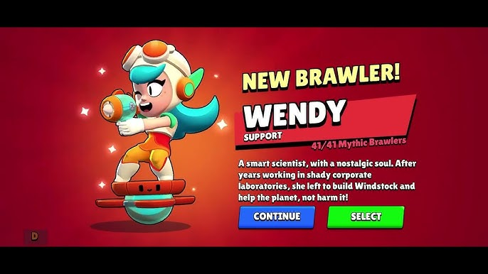

норі
Нори (Nori) — це легендарний боєць класу «Убивця» у Brawl Stars, який став першим персонажем в історії гри, народженим безпосередньо всередині таємничого Парку Старр. Він є сином відомого суші-майстра Кендзі (Kenji) та його дружини Кадзе, тому за лором гри міцно пов'язаний із ресторанною тематикою та азіатськими мотивами

венді
Венді (Wendy) — це міфічний боєць класу «Підтримка» в Brawl Stars, талановита вчена-еколог, яка використовує зелені технології для захисту своєї команди. Вона пересувається на особливій вітровій ховерборд-платформі під назвою «Віззл» та вміє літати над водою
Brawl Stars — це дуже популярна мобільна гра у жанрі екшн-шутер та MOBA, яку створила фінська компанія Supercell. Гравець обирає героя з унікальними здібностями та змагається в коротких матчах сам або разом із командою, заробляючи кубки та покращуючи своїх персонажів